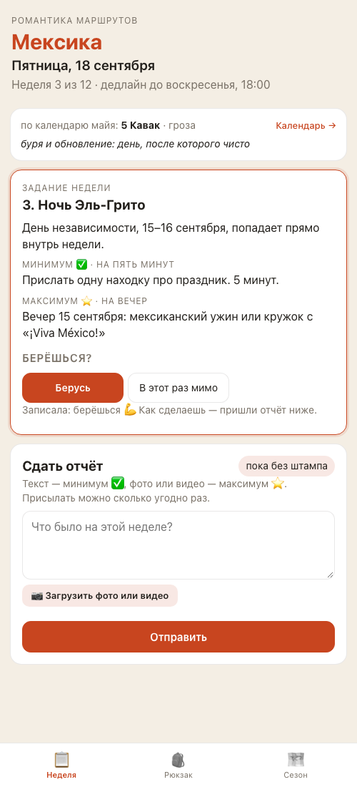
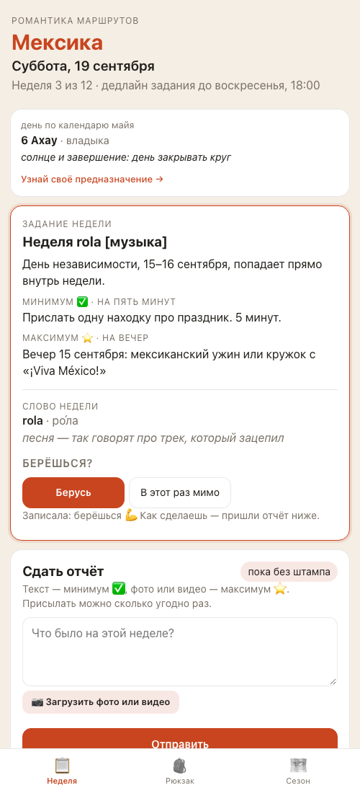
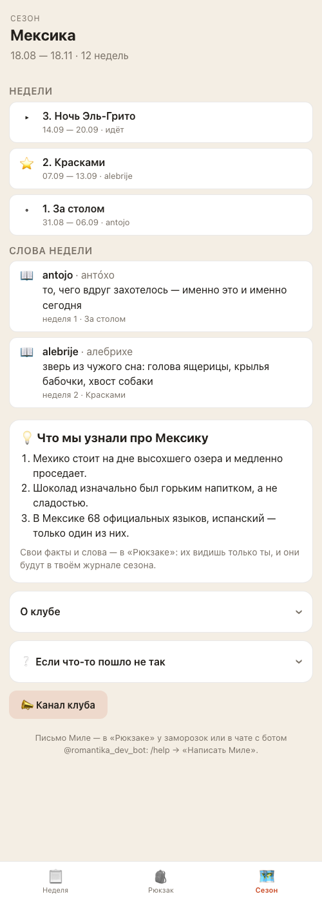
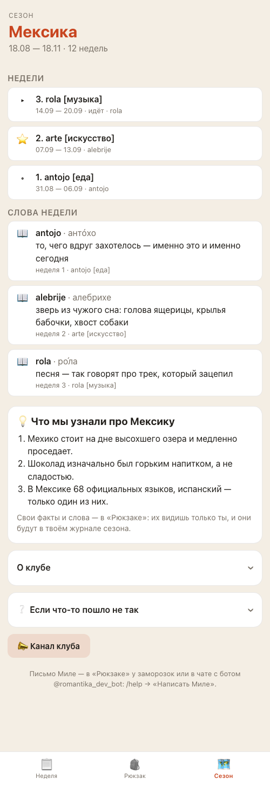
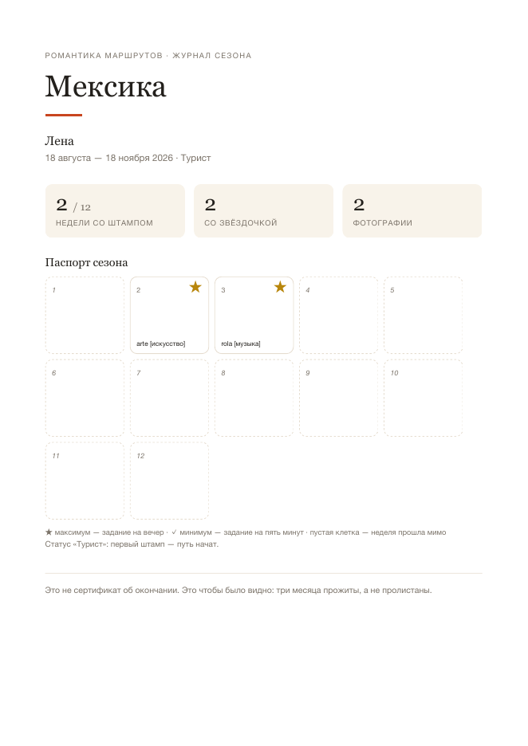
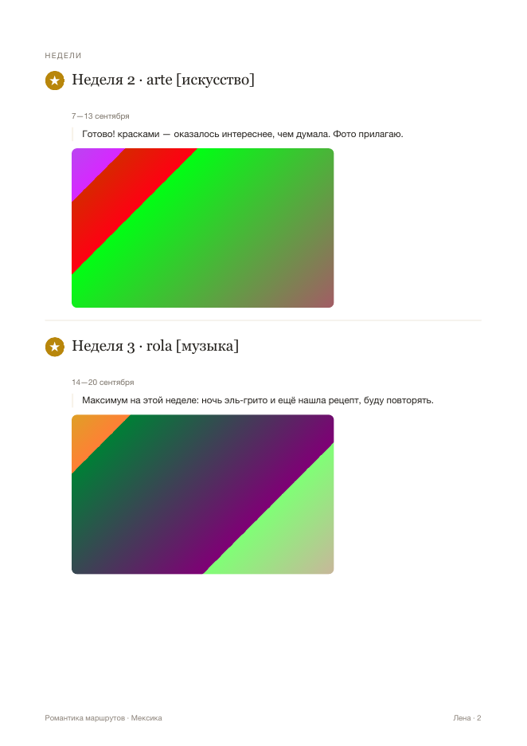

Всё, что ты назвала голосом после выкатки 2.5.0, сделано и проверено на стенде — тренировочной копии бота с придуманными участницами. Ниже — что изменилось, ответы на твои четыре вопроса и одно решение, которое я оставила тебе.




Имена недель живут только в админке — это не код, я их там не меняю без твоего слова. В канале ты называешь недели по слову, в боте они назывались иначе; вот что предлагаю вписать, чтобы совпало:
| № | Сейчас в боте | Станет |
|---|---|---|
| 1 | За столом | Неделя antojo [еда] |
| 2 | Красками | Неделя arte [искусство] |
| 3 | На слух | Неделя rola [музыка] |
| 4 | По страницам | Неделя libro [книги] |
Впишу я после выкатки, как договорились. Если захочешь поправить сама: Админка → «Задания» → неделя → «Название» → «Сохранить». Недели, названные по-старому («Тёмный зал»), продолжают выглядеть как раньше: экран сам разберётся.
Было: заморозка давалась за первое своё слово и за первый выполненный максимум. Стало: ещё и за первый свой факт про страну. В боте участница видит «Спасибо, записала ✅» и следом «❄️ И тебе +1 заморозка…»; в приложении форма заранее обещает: «За первый факт — ❄️ +1 заморозка», а число заморозок в «Рюкзаке» сразу обновляется. Проверено на стенде: у Юли после первого факта появилась запись «за свой факт про страну», после второго — ничего.
Заморозок за сезон две базовые плюс заработанные. Раньше всего можно было накопить пять, а автоматических причин стало три — слово, факт, максимум. У той, кто заработала все три, места на твою ручную заморозку (за комментарий, встречу, друга) уже не оставалось. Ты сказала «делаем» — потолок теперь шесть. Где это видно: в справке бота («❔ Помощь» → «Как заработать ещё заморозку») было «Всего можно накопить пять», стало «шесть»; в «Рюкзаке» плитка заморозок показывает «сколько осталось / сколько всего», и второе число теперь может дорасти до шести. Это изменение самой записи сезона в боевой базе, поэтому оно поедет вместе с выкаткой и после свежей копии базы; проверено, что откатывается назад.
Было «📨 Отчёт за неделю 3 от Юля», стало «от Юли». Так же в правках отчётов, письмах, новых словах и фактах. Фамилия тоже склоняется: «от Алисы Петровой». Иностранные имена, имена на согласный и эмодзи не трогаю — неправильный падеж читается хуже, чем именительный.


Картинки в отчётах Лены — цветные заглушки: на стенде живут придуманные участницы, настоящих фотографий там нет.
| Кто | Что делал | Итог |
|---|---|---|
| Автоматические проверки | Стиль и типы кода, 538 тестов (было 527; новые — про имена недель с «Неделя» внутри, про заморозку за первый и второй факт в боте и в приложении, про факт от тебя). Отдельно: правка устройства базы прогнана вперёд, назад и снова вперёд | зелёное |
| Помощник по коду | Три круга: читал каждую изменённую строку — не съедает ли обрезка лишнего, не выдаётся ли заморозка дважды, обратима ли правка базы | проходит; закрыто 9 важных находок, среди них — обещание заморозки тебе, которую ты не получишь, и «Неделя 7 · 7» у ещё не открытой недели |
| Помощник по экранам | Три круга: бот и приложение целиком — имена недель на четырнадцати поверхностях, потолок заморозок, склонение на восемнадцати именах, пустой экран фактов, злые сценарии, чтение служебных записей | проходит; закрыто 8 важных, в том числе список фактов в админке и обрезанные поля на странице календаря |
Что осталось знать. Русское имя недели пиши без слова «Неделя» — просто «Ночь памяти», «Тёмный зал». Если написать «Неделя памяти», слово повторится: в боте будет «за неделю «Неделя памяти»». Так вышло потому, что «Неделя» убирается из имени только перед испанским словом — иначе ломались бы обычные русские названия. Это записано и в твоей инструкции.
Заодно по ходу проверок починили три вещи, которых ты не просила, но которые мешали: в админке «Факты» теперь видно отдельно «Общие · N» (твои, их видят все) и «Личные · N» (участниц) — раньше они шли одним списком, и при пустом общем списке казалось, что у людей что-то есть; в «Рюкзаке» шторка заморозок называет, сколько всего можно накопить; на странице календаря длинная кнопка больше не сжимает поля «Месяц» и «Год».
От тебя, когда посмотришь:
Хочешь посмотреть сама до слияния — скажи, подниму стенд и дам ссылку.